File: 000660.gt.txt (if the image is defective, simply delete all Arabic text and the line will be excluded)
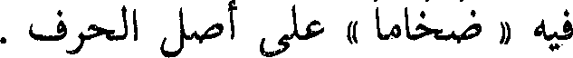
فيه « ضخاما » على أصل الحرف .
File: 000661.gt.txt (if the image is defective, simply delete all Arabic text and the line will be excluded)
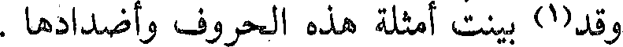
وقد(1) بينت أمثلة هذه الحروف وأضدادها .
File: 000662.gt.txt (if the image is defective, simply delete all Arabic text and the line will be excluded)
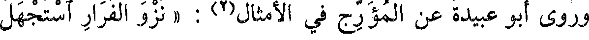
وروى أبو عبيدة عن المؤرج في الأمثال(2) : « نزو الفرار استجهل
File: 000663.gt.txt (if the image is defective, simply delete all Arabic text and the line will be excluded)
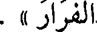
الفرارا » .
File: 000664.gt.txt (if the image is defective, simply delete all Arabic text and the line will be excluded)
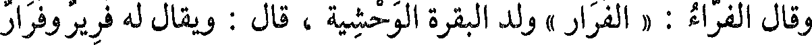
وقال الفراء: « الفرار » ولد البقرة الوحشية ، قال : ويقال له فرير وفرار
File: 000665.gt.txt (if the image is defective, simply delete all Arabic text and the line will be excluded)
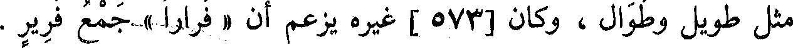
مثل طويل وطوال ، وكان [573 ] غيره يزعم أن « فرارا » جمع فرير .
File: 000666.gt.txt (if the image is defective, simply delete all Arabic text and the line will be excluded)
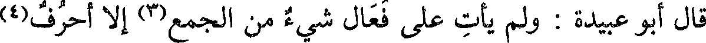
قال أبو عبيدة : ولم يأت على فعال شيء من الجمع(3) إلا أحرف(4)
File: 000667.gt.txt (if the image is defective, simply delete all Arabic text and the line will be excluded)
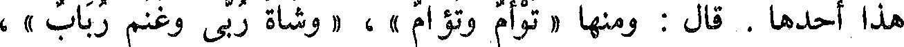
هذا أحدها . قال : ومنها « توأم وتؤام » ، « وشاة ربى وغنم رباب » ،
File: 000668.gt.txt (if the image is defective, simply delete all Arabic text and the line will be excluded)
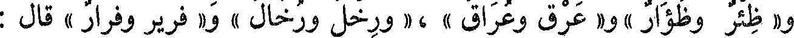
و« ظئر وظؤار » و« عرق وعراق » ،« ورخل ورخال » و« فرير وفرار » قال :
File: 000669.gt.txt (if the image is defective, simply delete all Arabic text and the line will be excluded)
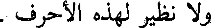
ولا نظير لهذه الأحرف .
File: 000670.gt.txt (if the image is defective, simply delete all Arabic text and the line will be excluded)
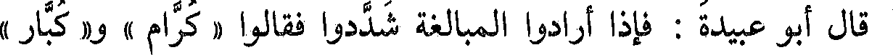
قال أبو عبيدة : فإذا أرادوا المبالغة شددوا فقالوا « كرام » و« كبار »
File: 000671.gt.txt (if the image is defective, simply delete all Arabic text and the line will be excluded)
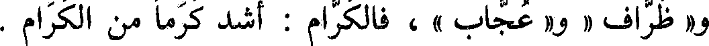
و« ظراف » و« عجاب » ، فالكرام : أشد كرما من الكرام .
File: 000672.gt.txt (if the image is defective, simply delete all Arabic text and the line will be excluded)
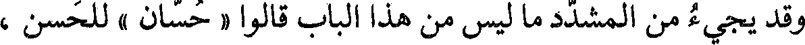
وقد يجيء من المشدد ما ليس من هذا الباب قالوا « حسان » للحسن ،
File: 000673.gt.txt (if the image is defective, simply delete all Arabic text and the line will be excluded)
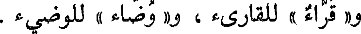
و« قراء » للقارىء ، و« وضاء » للوضيء .
File: 000674.gt.txt (if the image is defective, simply delete all Arabic text and the line will be excluded)
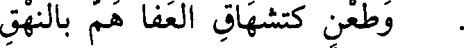
وطعن كتشهاق العفا هم بالنهق
File: 000675.gt.txt (if the image is defective, simply delete all Arabic text and the line will be excluded)
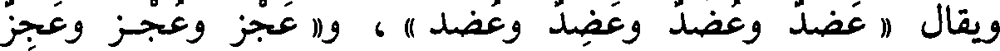
ويقال « عضد وعضد وعضد وعضد » ، و« عجز وعجز وعجز
File: 000676.gt.txt (if the image is defective, simply delete all Arabic text and the line will be excluded)
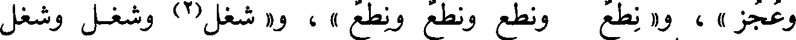
وعجز » ، و« نطع ونطع ونطع ونطع »، و« شغل(2) وشغل وشغل
File: 000677.gt.txt (if the image is defective, simply delete all Arabic text and the line will be excluded)
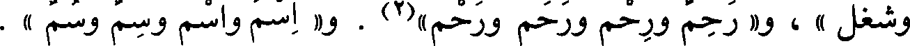
وشغل » ، و« رحم ورحم ورحم ورحم »(2) . و« اسم واسم وسم وسم » .
File: 000678.gt.txt (if the image is defective, simply delete all Arabic text and the line will be excluded)
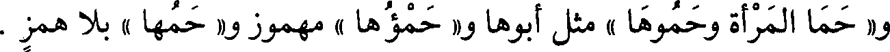
و« حما المرأة وحموها » مثل أبوها و« حمؤها » مهموز و« حمها » بلا همز .
File: 000679.gt.txt (if the image is defective, simply delete all Arabic text and the line will be excluded)
باب ما جاء فيه أربع لغات
File: 000680.gt.txt (if the image is defective, simply delete all Arabic text and the line will be excluded)
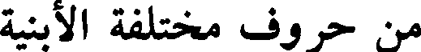
من حروف مختلفة الأبنية
File: 000681.gt.txt (if the image is defective, simply delete all Arabic text and the line will be excluded)
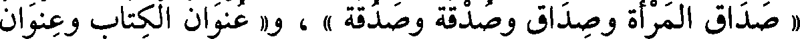
« صداق المرأة وصداق وصدقة وصدقة » ، و« عنوان الكتاب وعنوان
File: 000682.gt.txt (if the image is defective, simply delete all Arabic text and the line will be excluded)
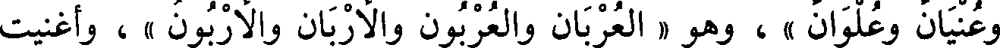
وعنيان وعلوان » ، وهو « العربان والعربون والأربان والأربون » ، وأغنيت
File: 000683.gt.txt (if the image is defective, simply delete all Arabic text and the line will be excluded)
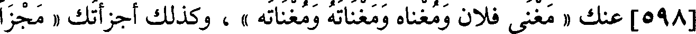
[598] عنك « مغنى فلان ومغناه ومغناته ومغناته » ، وكذلك أجزأتك « مجزأ
File: 000684.gt.txt (if the image is defective, simply delete all Arabic text and the line will be excluded)
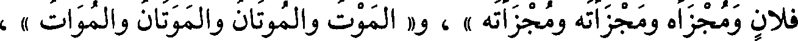
فلان ومجزأه ومجزأته ومجزأته » ، و« الموت والموتان والموتان والموات » ،
File: 000685.gt.txt (if the image is defective, simply delete all Arabic text and the line will be excluded)
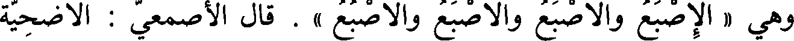
وهي « الإصبع والأصبع والأصبع والأصبع » . قال الأصمعي : الأضحية
File: 000686.gt.txt (if the image is defective, simply delete all Arabic text and the line will be excluded)
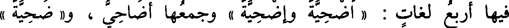
فيها أربع لغات : « أضحية وإضحية وإضحية » وجمعها أضاحي ، و« ضحية »
File: 000687.gt.txt (if the image is defective, simply delete all Arabic text and the line will be excluded)
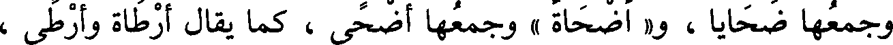
وجمعها ضحايا ، و« أضحاة » وجمعها أضحى ، كما يقال أرطاة وأرطى ،
File: 000688.gt.txt (if the image is defective, simply delete all Arabic text and the line will be excluded)
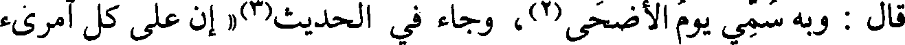
قال : وبه سمي يوم الأضحى(2) ، وجاء في الحديث(3) « إن على كل أمرىء
File: 000689.gt.txt (if the image is defective, simply delete all Arabic text and the line will be excluded)
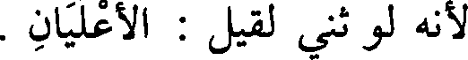
لأنه لو ثني لقيل : الأعليان .
To Save: `Ctrl+s`, make sure to choose `Webpage, complete`!